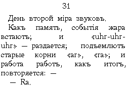
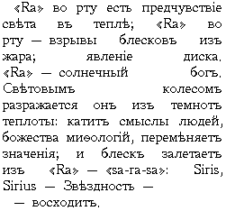

Glossolalia (Section 31)

The second day of the world of sounds.
As a memory, events of the heat arise; and "uhr-uhr-uhr" -- resounds; the old roots "ar," "ra" arise; and the labor of labors, like a result, recapitulates itself:--
-- Ra.

"Ra" in the mouth is a presentiment of light in the warmth; "Ra" in the mouth are -- explosions of gleams from the heat; the appearance of the disk. "Ra" is -- the sun god. Like a luminous [svetovoj] wheel it bursts out from the darknesses of the warmth: it rolls the meanings of people, the deities of mythology, transforms the significations; and a gleam flies from "Ra" -- "sa-ra-sa": Siris, Sirius -- Stariness--
-- rises.